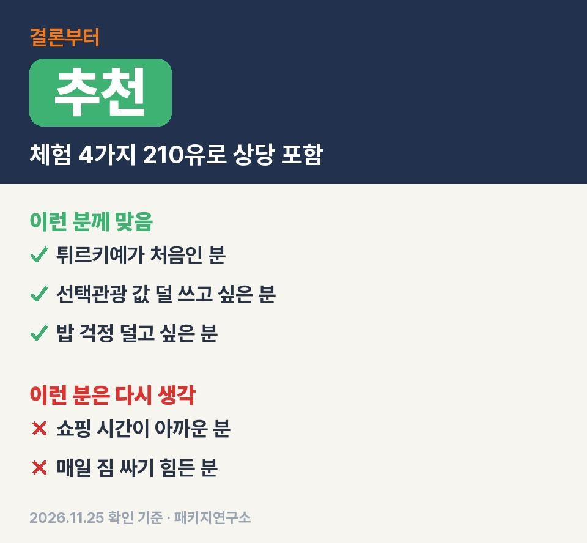
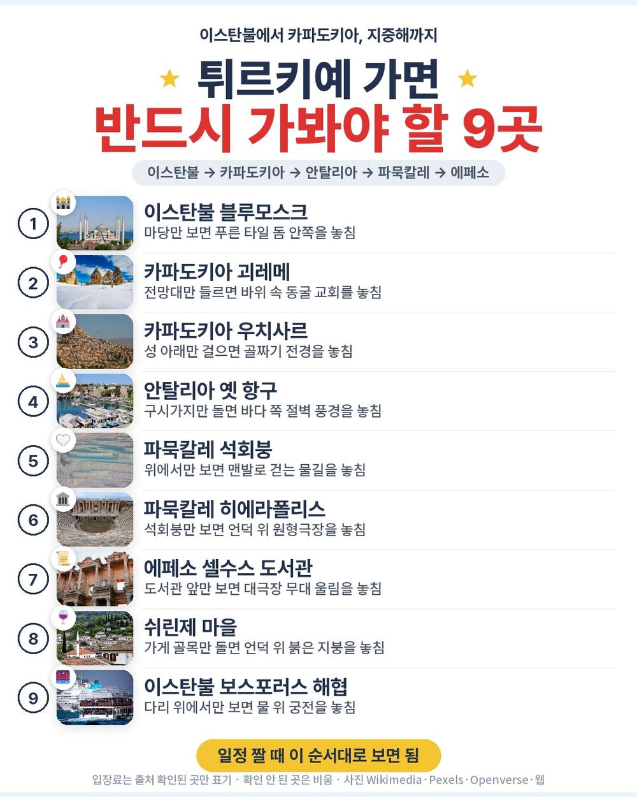
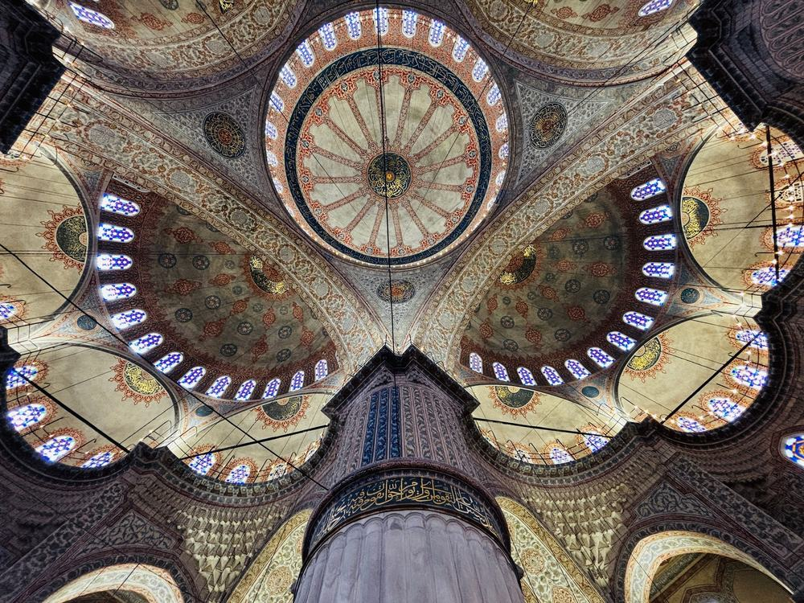
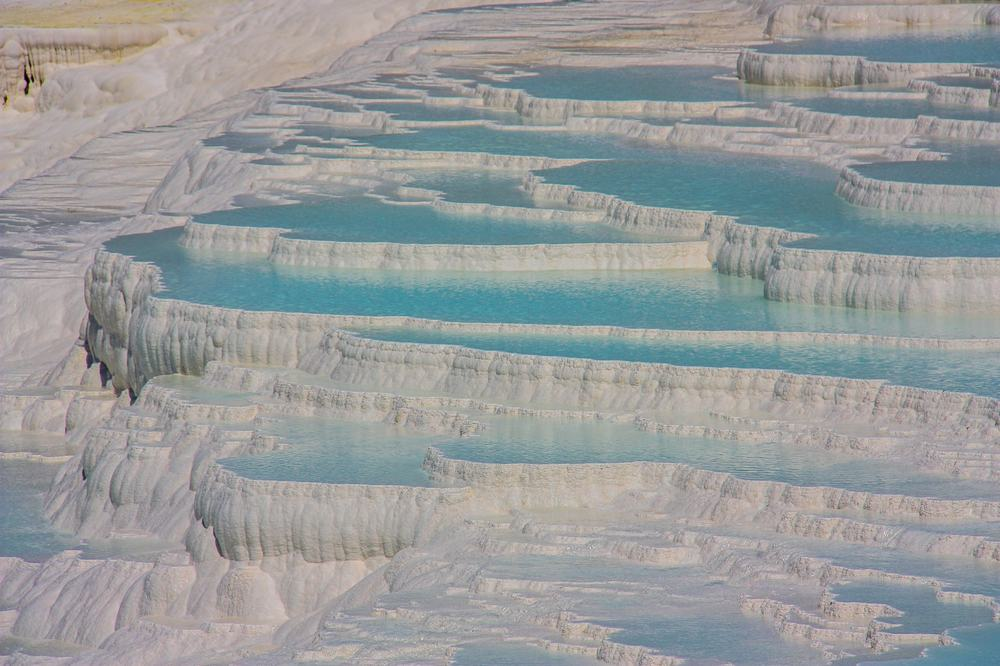

보스포러스 해협 크루즈, 지중해 유람선, 밸리댄스, 피에르 로티 언덕 케이블카까지 원문 표기 210유로 상당 체험을 상품값에 넣어 둔 튀르키예 일주 8박 9일임.
직접 다녀온 후기가 아니고 참좋은여행 일정표와 포함·불포함 원문을 하나씩 따져 본 글임.
결론 — 추천. 아시아나 직항 왕복, 특급 호텔 7박, 식사 21번(특식 11가지), 블루모스크 내부, 포함 체험 네 가지가 189만 9천원 안에 있음. 다만 쇼핑 시간이 아까운 분은 다시 따져 볼 것.

오늘 기준 출발일별 요금 보기
https://naver.me/GVVkTqZU

| 항목 | 내용 |
|---|---|
| 가격 | 1인 1,899,000원 (성인·소아 같음 · 12월 출발 기준) · 2인 3,798,000원 |
| 여행사 | 참좋은여행 |
| 항공 | 아시아나항공 직항 · 갈 때 13:55 출발 약 12시간 10분 / 올 때 21:55 출발 약 10시간 |
| 숙소 | 특급 호텔 7박(월드체인 3박 포함 · 모두 「또는 동급」, 출발 2~3일 전 확정) |
| 일정 | 8박 9일 · 식사 21번 · 선택관광 8개 · 쇼핑 6회 · 가이드·기사 경비 100유로 별도 |
▶ 내 출발일 오늘 기준 요금 확인 (제휴 링크 · 예약 시 수수료를 받으며 가격은 같습니다)
▶ 11월 25일 기준 튀르키예 패키지 최저 129만 9천원부터 — 출발일별 값 한 화면에: 비교 페이지
같은 일정을 대한항공으로 가는 상품은 1인 139만 9천원임(11월 25일 기준 · 출발일마다 다름).
| 번호 | 내용 | 한 줄 답 |
|---|---|---|
| 1 | 이 값에 들어 있는 것 | 체험 4가지 포함 |
| 2 | 현장에서 더 낼 돈 | 2인 200유로 |
| 3 | 일정과 체력 | 호텔 거의 매일 이동 |
| 4 | 자유여행으로 짜면 | 항공값 조회 못 함 |
| 5 | 맞는 분 · 안 맞는 분 | 3 대 3 |
직항 왕복과 특급 호텔 7박, 식사 21번에 유람선·크루즈·밸리댄스·케이블카까지 한 값에 묶임.
- 항공: 아시아나 인천–이스탄불 직항 왕복
- 숙소: 특급 호텔 7박, 그중 3박은 월드체인
- 식사: 21번, 케밥·돈두르마 같은 특식 11가지
- 체험: 밸리댄스·케이블카·유람선·크루즈(210유로 상당)
- 그 밖: 블루모스크 내부, 여행자보험

성소피아와 톱카프 궁전은 밖에서 보는 일정임. 대신 블루모스크는 안으로 들어감. 현지에서 따로 사면 210유로어치인 체험 네 가지가 처음부터 값에 들어 있음. 이 값대에서 이 부분은 꽤 센 편이라고 봄.
꼭 내는 돈은 가이드·기사 경비 1인 100유로이고 나머지는 고르는 만큼 붙음.
| 항목 | 금액 | 필수/선택 | 비고 |
|---|---|---|---|
| 가이드·기사 경비 | 200유로 (약 29만 4천원) | 필수 | 1인 100유로 · 1유로 약 1,470원(11/24) |
| 선택관광 8개 | 고르는 만큼 | 선택 | 1인 60~320유로 · 카파도키아 열기구 320 · 파묵칼레 열기구 260 · 성소피아 묶음 180 |
| 매너 팁·물값 | 직접 | 선택 | 개인 비용 |
| 싱글룸 | 45만원 | 해당 시 | 혼자 방을 쓸 때 |
| 합계 (2인 필수분) | 200유로 (약 29만 4천원) | 상품가 2인 3,798,000원 별도 |
- 선택관광: 안 하면 호텔이나 근처에서 쉬는 시간
- 쇼핑: 6번, 가죽·로쿰·터키석·카페트·면·건강식품 매장, 회당 약 60분, 구매는 자유
- 환전: 원문 안내는 선택관광은 유로, 개인 비용은 달러
두 분이면 상품값 379만 8천원에 경비를 더해 약 409만 2천원부터 시작함. 열기구 하나만 골라도 1인 320유로가 붙으니 갈 생각이면 처음부터 예산에 넣어 둘 것.
이스탄불에서 시작해 크게 한 바퀴 도는 일주라 호텔이 거의 매일 바뀜.
| 일차 | 가는 곳 | 버스 | 걷기 | 점심 · 저녁 |
|---|---|---|---|---|
| DAY 1 | 인천 13:55 출발 → 이스탄불 20:05 도착 | 공항→호텔 | 적음 | 기내식 · 기내식 |
| DAY 2 | 블루모스크(내부)·성소피아(외관)·히포드롬 → 베이파자르 → 앙카라 | 시간 표기 없음 | 보통 | 현지식 · 호텔식 |
| DAY 3 | 한국공원(조망) → 소금 호수 → 괴레메·데브렌트·우치사르·데린구유 | 시간 표기 없음 | 보통 | 현지식 · 호텔식 |
| DAY 4 | 콘야 경유 → 안탈리아 구시가지·유람선 | 시간 표기 없음 | 보통 | 현지식 · 호텔식 |
| DAY 5 | 안탈리아 → 파묵칼레 석회붕·히에라폴리스 | 시간 표기 없음 | 보통 | 현지식 · 호텔식 |
| DAY 6 | 쉬린제 → 에페소 → 마니사 | 시간 표기 없음 | 많음 | 현지식 · 호텔식 |
| DAY 7 | 부르사 → 이스탄불 | 시간 표기 없음 | 보통 | 현지식 · 한식 |
| DAY 8 | 톱카프(외관)·그랜드 바자르·발랏·피에르 로티·크루즈 → 21:55 출발 | 시내 | 많음 | 현지식 · 현지식 |
| DAY 9 | 13:55 인천 도착 | 없음 | 적음 | 기내식 · 없음 |
- 버스: 이 상품 후기에 종일 버스 타는 구간이 많아 고단했다는 말이 있음, 화장실은 때맞춰 챙겨 줬다는 말도 같이 있음
- 파묵칼레: 석회붕은 신발 벗고 맨발로 걸음, 수건과 신발 주머니 챙길 것
- 날씨: 원문 기준 12월 평균 5~8도, 겉옷·핫팩

9일에 도시 아홉 곳을 도는 일주라 버스가 긴 건 각오할 부분임. 대신 비행은 직항이라 갈아타는 피로는 없음. 돌아오는 날 인천에 오후에 내림.
이 상품 조건 한눈에 (출발일 달력·두 분 값·비슷한 상품과 비교)
https://pkg-lab.com/pkg/EPP208_OZ/?utm_source=ghpages&utm_medium=post&utm_campaign=daily
같은 목적지 다른 여행사 패키지, 쇼핑·선택관광·가이드 경비까지 비교
https://pkg-lab.com/go/?q=%ED%8A%80%EB%A5%B4%ED%82%A4%EC%98%88+12%EC%9B%94&utm_source=ghpages&utm_medium=post&utm_campaign=daily
항공값을 오늘 조회하지 못해 합계는 안 냈고 직접 짤 때 따로 챙길 칸만 적음.
| 항목 | 금액 | 근거 |
|---|---|---|
| 인천–이스탄불 왕복 항공 | 확인 못 함 | 2026-11-25 마이리얼트립 조회 안 됨, 숫자를 지어내지 않음 |
| 호텔 7박 | 확인 못 함 | 도시·날짜마다 다름 |
| 식사 | 따로 | 패키지는 21번 포함 |
| 공항 이동 | 따로 | 패키지는 전용 버스 포함 |
| 도시 사이 이동 | 따로 | 패키지는 전용 버스(와이파이) |
| 유람선·크루즈·케이블카·밸리댄스 | 따로 | 패키지는 210유로 상당 포함 |
| 여행자보험 | 따로 | 패키지는 포함 |
| 가이드 | 해당 없음 | 자유여행은 없음 |
- 동선: 앙카라·카파도키아·안탈리아·파묵칼레·에페소를 이으려면 국내선이나 장거리 버스를 여러 번 예약할 일이 생김
- 체험: 유람선·크루즈·공연은 현지에서 따로 사야 함
- 실값: 날짜를 정한 뒤 항공과 호텔을 넣어 비교하는 게 정확함
걸리는 건 쇼핑 여섯 번과 거의 매일 바뀌는 호텔이고 누구에게만 문제인지 분명함.
| 맞는 분 | 안 맞는 분 |
|---|---|
| 튀르키예가 처음이라 한 바퀴 다 돌아보려는 분 | 쇼핑 시간이 아까운 분 |
| 선택관광 값을 덜 쓰고 싶은 분 | 매일 짐 싸는 게 힘든 분 |
| 직항과 특식으로 이동·식사 걱정을 덜고 싶은 분 | 성소피아 안까지 꼭 보려는 분 |
참좋은여행 게시판 후기에는 새벽 열기구에서 본 카파도키아가 가장 감동이었다는 글, 특급 호텔이라 긴 하루 끝에 잘 쉬었다는 글이 있음. 종일 버스라 피로가 쌓인다는 글도 같이 있음.
Q. 튀르키예 패키지 가격은 이 상품이 얼마인가요?
A. 12월 출발 기준 1인 189만 9천원, 2인 379만 8천원. 출발일마다 값이 달라서 날짜별 요금을 보면 됨.
Q. 튀르키예 패키지 쇼핑은 몇 번인가요?
A. 6번. 가죽·로쿰·터키석·카페트·면·건강식품 매장이고 회당 약 60분. 구매는 자유임.
Q. 튀르키예 패키지 선택관광 안하면 어떻게 되나요?
A. 그 시간엔 호텔이나 근처에서 쉼. 열기구처럼 새벽 일정은 호텔에서 기다리고 성소피아 묶음 투어를 안 하면 광장에서 자유 시간임.
크루즈와 유람선, 밸리댄스, 케이블카를 처음부터 값에 넣고 블루모스크는 안으로 들어가는 구성이 이 값의 이유임.
튀르키예를 처음 한 바퀴 도는 분께 잘 맞는 9일임.
출발일에 따라 값이 달라서 가려는 날짜 요금부터 보면 됨.
오늘 기준 출발일별 요금 보기
https://naver.me/GVVkTqZU
이 글에는 네이버 제휴 링크가 포함되어 있으며, 링크를 통해 예약하시면 일정 수수료를 받습니다. 가격은 동일합니다. 가격과 구성은 2026년 11월 25일 확인 기준이며 출발일에 따라 달라질 수 있습니다.
▶ 튀르키예 패키지 오늘 값 나란히 비교
▶ 같은 목적지 다른 여행사 패키지, 쇼핑·선택관광·가이드 경비까지 비교: pkg-lab.com